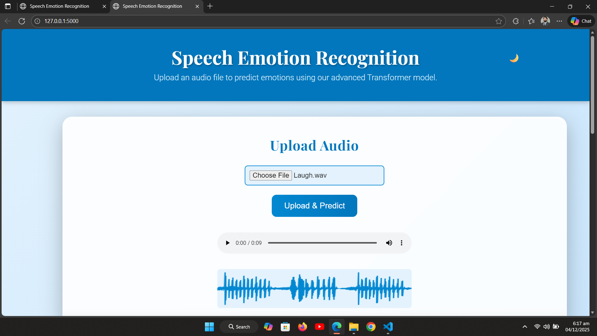
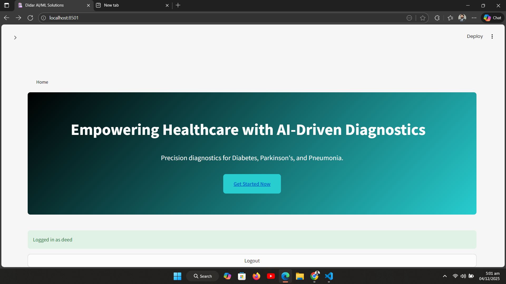

Computer Systems Engineering graduate (UET Peshawar, 2025), currently working as AI Engineer I at XFlow Research Inc, Islamabad. Specializing in transformer-based models, deep learning, and system-level programming — building real-world AI solutions from research to deployment.
An AI Engineer with strong foundations in Python, deep learning, and system architecture —
currently building AI/ML systems at XFlow Research Inc (since Feb 2026).
Developed a Transformer-based Speech Emotion Recognition model achieving 79% accuracy on noisy
real-world audio datasets.
I enjoy solving problems at the intersection of software engineering and machine intelligence —
optimizing performance, structuring clean data pipelines, and designing end-to-end ML
applications ready for production.

XFlow Research Inc · Islamabad, Pakistan
Building and deploying AI/ML systems as part of a research-focused engineering team. Contributing to applied machine learning solutions and XFlow's AI research initiatives.
UET Peshawar · Peshawar, Pakistan
Specialized in AI/ML, deep learning, systems programming, and data analytics. Developed the flagship Wav2Vec2 Speech Emotion Recognition project achieving 79% accuracy.

Fine-tuned Wav2Vec2 on SER datasets to classify emotions including fear, happy, sad, calm, and anger.
PyTorch · Wav2Vec2 · Pandas · Torchaudio
Diagnostic models for Diabetes, Parkinson's, and Pneumonia integrated into a single Streamlit interface.
TensorFlow · Python · Streamlit · Scikit-learn
File handling, memory blocks, metadata, delete/restore, and inode-style structure in C on Linux.
C Language · Linux · OS ConceptsGoogle Data Analytics
Professional Certificate · Google
Google Cybersecurity
Professional Certificate · Google
AI For Everyone
Certificate · DeepLearning.AI
Programming for Everybody
Python Certificate · University of Michigan